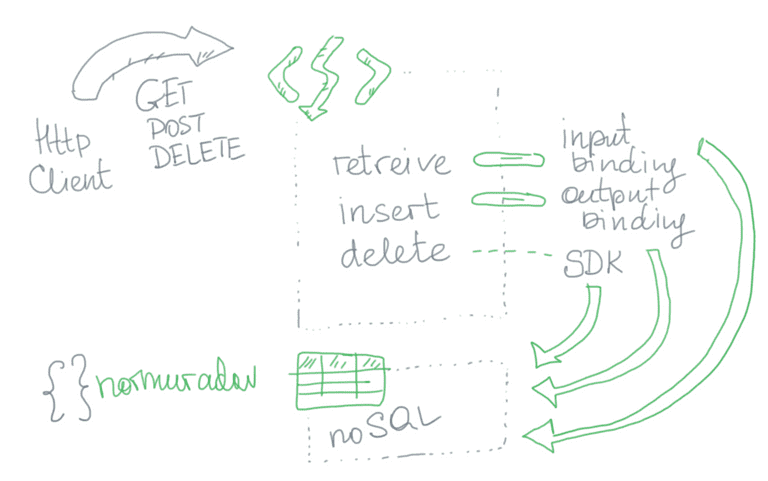

Azure Functions: Part II
Now I would like to look at bindings. The plan is to use table storage as a persistance layer. I used mixed approach of bindings and SDKs:
The code is here.
Alternative
One can of course use the library to manage the input/output operations. In non-trivial cases it is the only way. When one need, for instance, use various blob types.